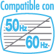

|
PRECAUCIONES SOBRE LA ZONA DE JUEGO |
¡Haz suficiente espacio a tu alrededor!
Es probable que te muevas mucho al usar el mando de Wii, así que procura que la zona donde juegues esté despejada. Asegúrate de que no haya muebles, objetos u otras personas en tu zona de juego para no chocarte por accidente con ellos durante la partida. Del mismo modo, como se indica en el manual de instrucciones de la consola, se recomienda estar al menos a un metro de distancia del televisor.
Esta información también está disponible en el sitio web: www.nintendo.com/healthsafety.

Muchas personas no conocen la diferencia entre los modos 50 y 60 Hz, pero, dado que la mayoría de los televisores modernos son compatibles con la señal de 60 Hz, merece la pena que descubras si tu televisor también lo es. El hercio (Hz) es una unidad de medida relacionada con el número de imágenes por segundo que puede reproducir un televisor.
Una señal de 50 Hz genera 25 imágenes por segundo y una de 60 Hz, 30. Aunque no parezca un gran cambio, la diferencia en pantalla es notable. A 60 Hz, las imágenes se ven con menor parpadeo y se obtiene una velocidad de juego óptima, todo lo cual te ayudará a disfrutar aún más del juego.
La consola Wii tiene activado el modo 50 Hz (576i) de fábrica. Para cambiarlo y activar el modo 60 Hz (480i), selecciónalo en TIPO DE TELEVISOR en la configuración de Wii. No obstante, algunos televisores, sobre todo los antiguos, no permiten reproducir el modo 60 Hz (480i), y por ello ciertos jugadores podrían tener problemas al usar este modo en sus televisores. Para saber si tu televisor es compatible con el modo 60 Hz (480i), consulta el manual del televisor o ponte en contacto con el fabricante.
Si al activar el modo 60 Hz (480i) la pantalla aparece en blanco o con la imagen distorsionada, es probable que tu televisor no sea compatible con este modo. Para cambiarlo de nuevo, pulsa el Botón RESET en la consola Wii a la vez que pulsas abajo en la cruz de control del mando, y la consola se reiniciará en el modo 50 Hz (576i). Para obtener más información sobre el ajuste del tipo de televisor, consulta el manual de canales y configuración de la consola Wii.
No olvides que, si utilizas el cable RGB (RVA)-Euroconector de Wii (RVL-013) (se vende por separado) con un televisor con entrada RGB compatible con el modo 60 Hz (480i), o bien el cable por componentes de Wii (RVL-011) (se vende por separado) con un televisor con entrada de vídeo por componentes, obtendrás imágenes de una extraordinaria nitidez.
El modo EDTV/HDTV (480p) utiliza un sistema de exploración progresiva de imágenes que permite ver y disfrutar de los juegos con una extraordinaria calidad. Las imágenes son más nítidas y la velocidad de juego óptima, todo para que tu experiencia sea realmente inolvidable. En Nintendo® queremos que disfrutes de nuestros juegos en las mejores condiciones posibles.
No obstante, tal vez no puedas ver el juego en este modo debido al televisor o al cable que utilizas. Para saber si tu televisor es compatible con el modo EDTV/HDTV (480p) de exploración progresiva, consulta el manual del televisor o ponte en contacto con el fabricante. Antes de usar este modo, asegúrate de utilizar el cable por componentes de Wii (RVL-011) (se vende por separado) y de activar el modo de exploración progresiva en tu televisor.
La consola Wii tiene activado el modo 50 Hz (576i) de fábrica. Para activar el modo EDTV/HDTV (480p), selecciónalo en TIPO DE TELEVISOR en la configuración de Wii. Consulta el manual de canales y configuración de la consola Wii para saber cómo hacerlo.


 : NO SUELTES EL MANDO DE Wii. Si te sudan las manos, descansa un momento y sécatelas. Si haces movimientos demasiado bruscos, podría romperse la correa y escaparse el mando. Esto podría causar lesiones a otras personas o provocar daños a los objetos a tu alrededor.
: NO SUELTES EL MANDO DE Wii. Si te sudan las manos, descansa un momento y sécatelas. Si haces movimientos demasiado bruscos, podría romperse la correa y escaparse el mando. Esto podría causar lesiones a otras personas o provocar daños a los objetos a tu alrededor.